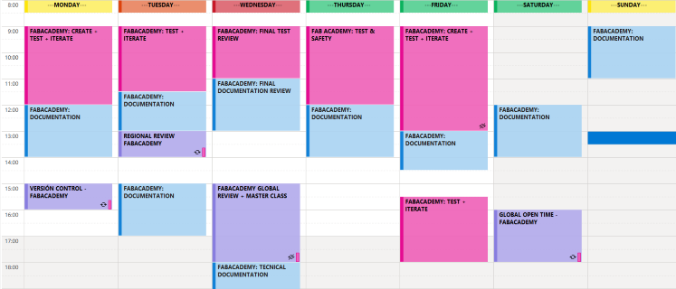
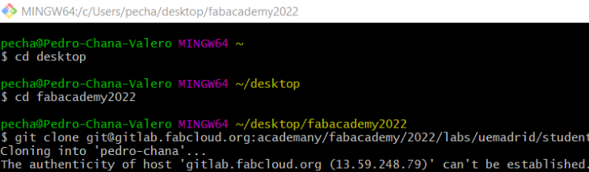
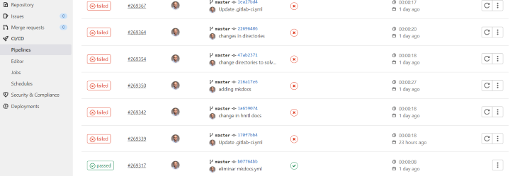
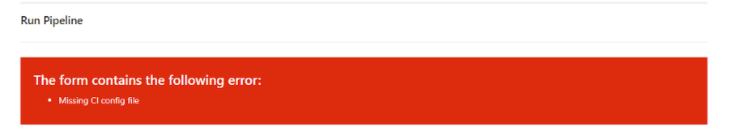
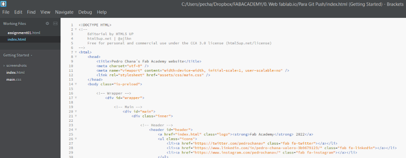
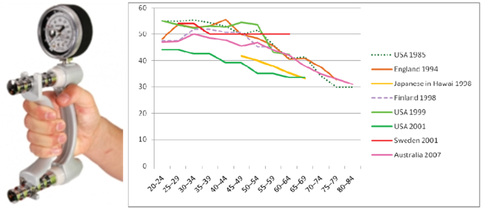
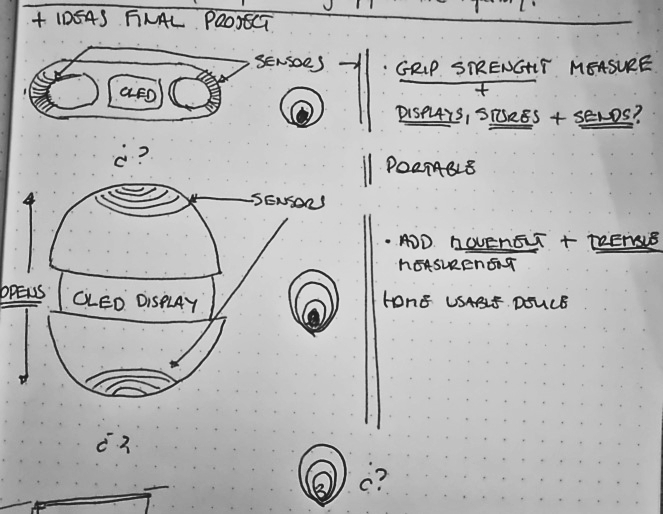

Week01: Project Management and Web Development
Getting started with Git!
If you explore Fabacademy webpage you´ll have access to hundreds of detailed repositories of how to do, step by step, tutorials. But, my main goal is to give you an insight of my impressions and thoughts of how I managed to overcome mistakes and failures, and of course my delights and achievements! with my Windows64x laptop.
The way you prepare and organize yourself, and your time, will determine each week´s results. As for me, as you can chek in my personal info, I have 0 background or experience in, coding or web development. So my planning for this week is as follows:
- Retrieve tecnical documentation of the programs that i´m going to use.
- Create cheatsheets, as I go, to have a quick access to useful commands.
- Install, execute and begin to work!
I know its a very personal approach but It works for me, at least it makes me feel confident. You have to mentalize yourself that you are going to make mistakes, so it´s better to be prepared to learn from them.
As you can read in shortcuts and extras, at week 0 (bootcamp week), I already had installed and configured all the accounts and programs needed for this week
Getting hands-on with Gitbash, wasn´t easy at first, but once you committed all possible mistakes (name any of them, i´ve done it for sure), and you find out that there´s a command for even the most-broken branch, you begin to get more comfortable.
Here you have the most important steps I had to deal with Git,(running on Windows 64), so far:
After installing Git, I hadn´t the slightest idea of what to do with it, so I checked the Git tutorial at the FabAcademy2022 Shedule, and had a look at other years students repositories such as: Adrián Torres, where you can find a useful Git Simple Cheat Sheet, Nadieh Bremer , and Alejandro Ulecia. Once with more info, I decide to install a local repository in my laptop.
After getting my username, email, SSHKey and shared my public key with Gitlab server I had my first big issue, " the authentity og host (gitlab.com) can´t be established. This is the first time that I had a close call heart attack.

This issue took up a lot of my time, although in the end, it was sorted unintentionally. As I was explaining the issue and repeating, fot the 5th time, all the steps to one of my FabLab teammates, I changed the repository direction to another folder and, voilá, it just... worked! Another simple action that gave me headaches, at the begging, whas how to navigate through Gitbash, so I found out this:
Once I established contact with the Gitlab server, and my student repository, I began to try different git commands, you´ll find them all at Shortcuts and extras, and was encouraged to practice with simple modifications in my repository with no major issues. As you can see from my webpage I decided to use HMTL files, what could go wrong..?, so I checked a few other repositories in Gitlab, such as Kitija Kumuda and watching the version control recitation of the past two years, so I:
IMPORTANT NOTE: Take your time to enjoy when you accomplish a task with no mayor issues.. you´ll need to go back to those memories when things get worse.
At this moment I got so animated that I tried to upload to the server all my webpage documents without checking out size and disk usage (du -sh*). Luckily for me it didn´t pass the 10Mb limit establisehd by Gitbash, so I had to practice with my Git Cheat Sheet to get it all back to normal: git reset.
Even do, I had everything running, I wanted to apply some changes in the Gitlab server regarding where I was going to allocate my html web documents, so during that process the name of the file .gitlab-ci.yml changed to gitlab-ci.yml.(I´m still wondering how?). But that caused a FATAL ERROR in the pipeline:

To solve this unexpected situation I attempted every known way to restore this error (Without knowing the cause, of course) and this is where I found out you can be calm.. Gitbash is unbreakable, the worst thing that can happen is that you use a reset --hard system/origin and start all over again, but that even didn´t work! At this stage, I leaned on my instructor Alberto, not to ask for the solution, but for advice, so he patiently supervised my steps until I finally found the error in the CI/CD section of the Gitlab server, and with the help of Google, found the solution: Substitute the name of the file to its original with the dot first.
As a reflection of this setback, that took me nearly half a day and 5 years of health, I´ve come to the understanding that (maybe not suitable for others) I preffer to invest more time in understanding how machines, programs, tools work, errors included, at first. It causes you to go very very slow at the beggining, but, it gives you a burst of confidence and speeds x10 the rest of the time you have to use them. So at this point I can say i´ve reached, fulfilled and completed more than one spiral with Git.
Preparing HTML web with Brackets
After my intense experience with git, i´ve had 0 issues since, and now I started to work on my html web using Brackets, a simple and effective open source html editor. With Brackets i´ve had no setbacks, it easy to use once you get the hang of the commands, that you can also find Shortcuts and extras. So the steps to work on my html web were:

Finally, the last program i´ve installed to check my image size and resize if nedded is the ImageMagick Display, and slowly at first, but quicker at the end i´m finishing this first weeks assignmet as you can see!
So, as for final impressions: It hasn´t been a bad start for having 0 experience and managing time with my full time job and family responsibilites. It´s true that i´ve invested much more time than I expected, but as I said before i´ve gained speed progresively and finished confident, and happy with what i´ve achieved so far, and willing to do it better. If I have more time in the near future (do it seems not possible..) I would like to organise my Gitlab server better and improve my html editing skills and therefore wy web page
Week01(part 2): Principles and practices:
CONTEXT AND CONCEPT IDEA:
Objetive measurement of musculoskeletal biomarker/s in non-clinical environments
We are getting older, we live longer and are progressively more and more connected. This, obligues healthcare professionals, in collaboration with other areas of knowledge, to think about new and alternative diagnostic, pronostic and follow-up procedures, that can cover all patient´s needs. Nowadays, not all healthcare assessment are done in clinical settings, the need to be able to measure them in a real environments, what is known as real worl data (RWD), has arisen.
In order to do so, one of the main musculoskeletal biomarkers, (an objective data/variable that by itself is capable of having a significant impact on healthcare decision making and therefore on a person´s health), is the measurement of maximum isometric strength, or commonly called Grip strenght.

Grip strength is one of the main biomarkers of frailty, an indicator of good or bad functional prognosis, and in certain populations even of death. At present, grip strength is measured, in clinical settings, in a standardized way with dynamometry (Kg/cm2), so, it would be of interest and significantly useful to be able to measure it in non clinical environments at a low cost, and in a sustainable way, with the use of digital fabrication. This approach would facilitate its usability to healthcare professionals, with the purpose of having a clinical significant impact on patients health.
Actually, there are few studies that explore alternative ways of measuring grip strenght usign frugal innovation, such as:
Final project idea
Functional. Evaluation. e-Device.
As I explained in the previous section, my idea is to create a device, I still haven´t got a final draft because I start from 0, that can initially measure, mainly in frailty patients, grip strenght in a non-clinical environment, displaying, storing and sending it to health care professionals in order to help decision making. I would also like to add the capability of detecting minimal clinical important diference (MCID), and specific movement measurement related to sub-maximum strenght (endurance).
| SPIRAL GOALS | WORKING RESULTS |
|---|---|
| Spiral 1. | Design device + Grip strenght measure + display. |
| Spiral 2. | Grip strenght measure, + display + store in SD card. |
| Spiral 3. | Capable of detecting MCID + sending information. |
| Spiral 4. | Add specific movement and tremble measurement. |
First sketches of my final project:01 February 2022

New sketches of my final project: 06 of February 2022
As you can see, I´m still not sure of how to finally design my project. My main goal is to keep it as simple as possible, and if possible visually aesthetic. So I´m still researching and documentating ideas and posible designs in order to choose a final one soon. The postive part is that i´ve got very clear what it´s going to do, and what inputs and outputs i´mg going to use, and what esthetical elements I want it to have.
New sketches:
In relation to how´s my Final Project going, you can check here: Go to Final Project.